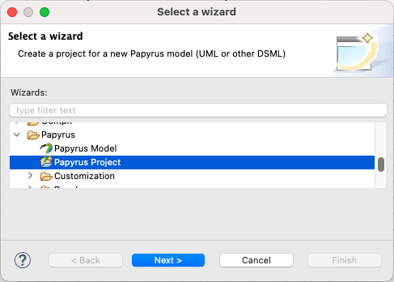
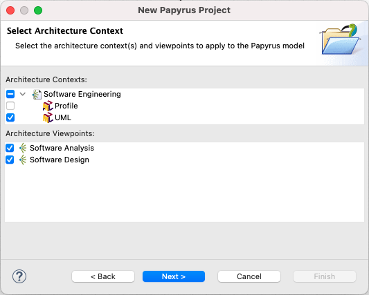
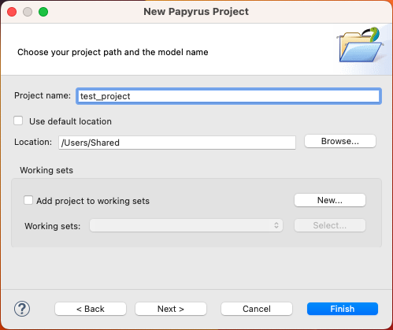
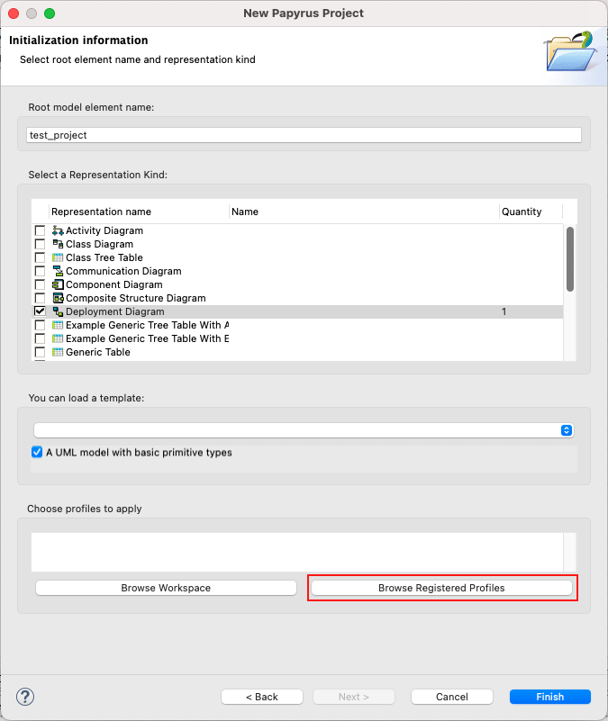
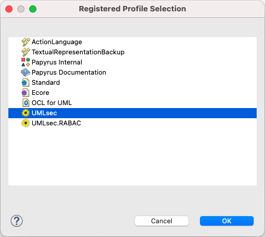
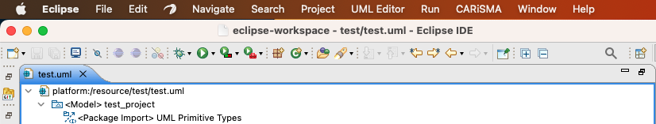
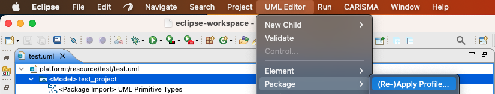
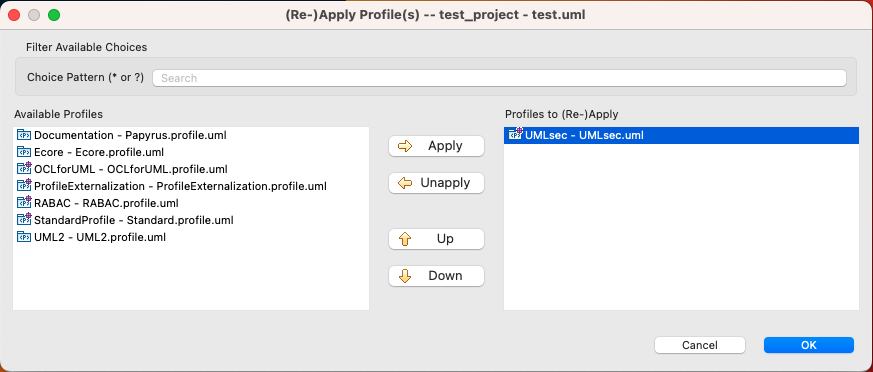

Creating UMLsec models in Papyrus MDT
Content:
- Create a new Papyrus project. Alternatively use an existing project as container
for your models and select Papyrus Model in the dialog (File → New → Papyrus Model).

- Select UML as the model type.

- Enter a name for your Papyrus project.

- Enter the Diagram Name and select the diagram type you want to create.
Check that you want to load an UML model with basic primitive types as a template - this
will make modeling easier for you. Optionally, you can directly register the the UMLsec profile for your project, by clicking
"Browse Registered Profiles"

- Choose the UMLsec profile and click OK and afterwards Finish to open the new empty diagram

- If the model is open, close the .di file of your project.
- In the Project Explorer open the .uml file of your model.
- The following screen will appear:

- Select the <Model> element in the UML Model Editor.
- Select the menu item UML Editor → Package → Apply Profile.

- Select the UMLsec profile in the appearing window.

- Click Add to apply the profile and OK to confirm your decision.
- Save your project.
- If you re-open your model in Papyrus, the UMLsec profile is applied and its stereotypes may be applied